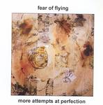

| Artist: | Fear Of Flying |
| Title: | More Attempts At Perfection |
| Label: | self produced |
| Length(s): | 48 minutes |
| Year(s) of release: | 2003 |
| Month of review: | [10/2005] |
| 1) | Photo BMP | 3.49 |
| 2) | Shoreline | 4.04 |
| 3) | A Toast For Me | 3.45 |
| 4) | When You Fly | 4.17 |
| 5) | Kosovo | 3.54 |
| 6) | The Shades Of Fire | 4.08 |
| 7) | The Last Lullabye | 3.37 |
| 8) | In Tennessee | 3.54 |
| 9) | Hypnotize | 4.28 |
| 10) | I Know | 4.39 |
| 11) | All The Things | 4.13 |
| 12) | Windows | 4.15 |
A Toast For Me is yet another catchy song this time dominated instrumentally by strumming acoustic guitar and lined by keyboards. Still, the vocals are the most important element of the song, and so far the vocal melodies are good. When You Fly is a bit less up-tempo, while the dancing keyboard parts remind me of an eighties pop song, I think Who's Johnny by one of the Debarge boys.
Kosovo is finally time for some introspection, but do not expect a ballad yet. This is more in the vein of Peter Gabriel (without a vocal ressemblance). The Shades Of Fire has a very memorable chorus, but as always Fear Of Flying never gets shallow, and the music harbours quite a bit of energy. I do think that more money and better production could have made that come out even better.
Aha, finally a real ballad guys? The Last Lullabye opens with friendly piano, and an excellent vocal melody. Backing vocals help to obtain a warm atmosphere. In Tennessee signifies a return to catchy pop tunes. This one is a bit too steady, while the guitar solo is a bit in wailing meander style.
Hypnotize opens with piano again, like Lullabye, with the vocalists making weird vocal noises in the back. What will happen here? The bass then takes over, for the first time, making for rhythmic layer beneath this rather poppy track. I Know means a decrease in tempo, and a bit of moodiness.
All The Things does not bring much new, although the drummer behaves quite actively here. At times I also hear some The Police in the music. The guitar work is atmospheric here, with echoey vocals. This is one of their most complex tunes, with some freewheeling keys, Gentle Giantesque vocals, and varied drumming. I could do with more the latter, certainly.
Windows is the closer, with a dark brown guitar sound, and piano overneath. This is a rather balladic tune, with a relatively low tempo and sparse sounding. The bass plays a role of distinction here. At the end, the pace and bombast goes up with brassy keyboards.